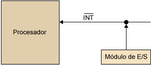

Unidad #1
Arquitecturas de cómputo
1.1 Modelos de Arquitecturas de Cómputo
1.1.1 Clásicas
Estás arquitecturas se desarrollaron en las primeras computadoras electromecánicas y de tubos de vacío.
Hay dos arquitecturas distintas relacionadas con el oso de distribución de la memoria arquitectura de Jonh Von Neumann y arquitectura Harvard.
Arquitectura Von Neumann:
Tradicionalmente los sistemas de microprocesadores se basan en esta arquitectura, en la cual la unidad central de proceso (CPU), está conectada a una memoria principal única (casi siempre solo RAM) donde se guardan las instrucciones del programa y los datos. A dicha memoria se accede a través de un sistema interconexión de buses único (control, direcciones y datos).
En un sistema con arquitectura Von Neumann el tamaño de la unidad de datos o instrucciones está fijado por el ancho del bus que comunica la memoria con la CPU. Así un microprocesador de 8 bits con un bus de 8 bits, tendrá que manejar datos e instrucciones de una o más unidades de 8 bits (bytes) de longitud. Si tiene que ceder a una instrucción o datos de más de un byte de longitud, tendrá que realizar más de un acceso a la memoria.
El tener un único bus hace que el microprocesador sea más lento en su respuesta, ya que no puede buscar en memoria una nueva instrucción mientras no finalicen las transferencias de datos de la instrucción anterior.
Este modelo consta de cinco componentes principales:
•Unidad de memoria
•Unidad de entrada/salida
•Unidad de control. Incluidos CPU
•Unidad aritmética lógica. Incluida en CPU
•Registros de programas. Incluidos en CPU
Modelo Harvard:
Esta arquitectura utiliza los microcontroladores tiene la unidad central de proceso (CPU) conectada a dos memorias (una con las instrucciones y otra con los datos) por medio de los dos buses diferentes. Una de las memorias contiene solamente las instrucciones del programa (memoria de programa), y la otra sólo almacenan datos (memoria de datos). Ambos buses son totalmente independientes lo que permite que la CPU pueda acceder de forma independiente y simultánea a la memoria de datos y a la de instrucciones. Cómo los buses son independientes estos pueden tener distintos contenidos en la misma dirección y también distinta longitud. También la longitud de los datos y las instrucciones puede ser distinta, lo que optimiza el uso de la memoria en general.
La principal desventaja de este arquitectura; el bus de datos y direcciones único se convierte en un cuello de botella por el cual debe pasar toda la información que se lee de o se escribe a la memoria, obligando a que todos los accesos a esta sean secuenciales. Limita el grado de paralelismo (acciones que se pueden realizar al mismo tiempo) y por lo tanto, el desempeño de la computadora.
1.1.2 Arquitectura Segmentada
Es una de las tecnologías utilizadas para realizar la segmentación o paralelismo. Consiste en descomponer el proceso de ejecución de las instrucciones en fases o etapas que permitan una ejecución simultánea. Explota el paralelismo entre las instrucciones de un flujo secuencial.
La segmentación es una técnica de implementación por la cual se solapa la ejecución de múltiples instrucciones. La técnica de implementación clave utilizada para hacer CPU rápidas.
Es como una línea de ensamblaje: cada etapa de la segmentación completa una parte de la instrucción. Como en una línea de ensamblaje, la acción a realizar en una instrucción se descompone en partes más pequeñas como cada una de las cuales necesita una fracción del tiempo necesario para completar la instrucción completa.
Cada uno de estos pasos se define como etapas de la segmentación o segmento.
Las etapas están conectadas, cada una a la siguiente, para formar una especie del cauce las instrucciones se entra por un extremo, son procesadas a través de las etapas y salen por el otro.
La productividad de la segmentación está determinada por la frecuencia con que una instrucción salga del cauce. Como las etapas están conectadas entre sí como todas las etapas deben estar listas para proceder al mismo tiempo.
El tiempo requerido para desplazar una instrucción, un pasó, a lo largo del cauce es un ciclo máquina.
La duración de un ciclo máquina está determinada por el tiempo que necesita la etapa más lenta (porque todas las etapas progresan a la vez). Consecuencia, el ciclo máquina es un ciclo de reloj (a veces dos o raramente más), Aunque el reloj puede tener múltiples fases.
La mejora de velocidad en debida a la segmentación es igual al número de etapas.
La segmentación consigue una reducción en el tiempo de ejecución medio por instrucción. Esta reducción se puede obtener decrementando la duración del ciclo de reloj de la máquina segmentada o disminuyendo el número de ciclos de reloj por instrucción o haciendo ambas cosas. El mayor impacto está en el número de ciclos de reloj por instrucción, Aunque el ciclo de relojes, con frecuencia, más corto en una máquina segmentada (especialmente en Súper computadoras segmentadas). La segmentación es una técnica de implementación como que explota el paralelismo entre las instrucciones de un flujo secuencial. Tiene la ventaja sustancial que, de forma distinta algunas técnicas de aumento de velocidad, no es visible al programador.
1.1.3 Arquitectura de Multiprocesamiento
Se denomina multiprocesador a un computador que cuenta con dos o más microprocesadores (CPUs).
El multiprocesador puede ejecutar simultáneamente varios hilos pertenecientes a un mismo proceso o bien a procesos diferentes.
La arquitectura NUMA, donde cada procesador tiene acceso y control exclusivo a una parte de la memoria.
La arquitectura SMP, donde todos los procesadores comparten toda la memoria. Para que un multiprocesador operé correctamente necesita un sistema operativo especialmente diseñado para ello. La mayoría de los sistemas operativos actuales poseen esta capacidad. Cuando se desea incrementar el desempeño más de lo que permite la técnica de segmentación (pipeline), se refiere utilizar más de un procesador para la ejecución del programa de aplicación.
Los CPU de multiprocesamiento según Flynn se clasifican de la siguiente manera:
•SISO (Single Instruction, Single Operand): computadoras monoprocesador.
•SIMO (Single Instruction, Multiple Operand): procesadores vectoriales, exenciones MMX.
•MISO (Multiple Instruction, Single Operand): no implemetado.
•MIMO (Multiple Instruction, Multiple Operand): sistemas SMP, Clusters, CPUs.
La mayoría de los procesadores modernos incluye algunas instrucciones de tipo vectorial, tales como las extensiones Al conjunto de instrucciones tales como mmx y SSE. Estás instrucciones les permiten procesar flujos multimedia más eficientemente.
Los procesadores digitales de Señales (DSP), son procesadores especializados en el procesamiento de señales tales como audio, video, radar, sonar, radio, etcétera. Cuentan con instrucciones tipo vectorial que los hace muy aptos para dicha aplicación. Suelen utilizarse en conjunto con un microcontrolador en dispositivos como reproductores de audio, reproductores de DVD y blue-ray, teléfonos celulares, sistemas de entretenimiento, sistemas de adquisición de datos, instrumentos médicos, controles industriales, etcétera.
En los sistemas SMP (simetric multiprocessig), varios procesadores comparten la misma memoria principal y periféricos de entrada/salida, normalmente conectados por un bus común. Se conocen como simétricos, ya que ningún procesador toma el papel de maestro y los demás de esclavos, sino que todos tienen derechos similares en cuanto al acceso a la memoria y periféricos y ambos son administrados por el sistema operativo. Pueden formarse con varios núcleos en un solo circuito integrado o con varios circuitos integrados en una misma tarjeta madre. La primera opción ha sido popularizada a hacerse más económica los procesadores multinucleo de los principales fabricantes y con su uso en sistemas de gama media y baja, e inclusive en teléfonos celulares y tabletas. La segunda opción fue la que se usó en un principio y sigue siendo usada en estaciones de trabajo y en servidores de alto rendimiento debido a que incrementa el poder computacional del sistema, pero también incrementa considerablemente el costo del sistema.
1.2 Análisis de los componentes
Además de las arquitecturas clasicas mencionadas anteriormente, en la actualidad han aparecido arquitecturas híbridas entre la Von Newmann y la Harvard, buscando conservar la flexibilidad, pero mejorando el rendimiento. Los programas cada vez más grandes y complejos demandan mayor velocidad en el procesamiento de información como lo que implica la elección de microprocesadores más rápidos y eficientes. Para el diseño de un microprocesador debemos de visualizar y decidir cuál será su juego de instrucciones.
1.2.1 Arquitecturas
Arquitectura CISC:
En la arquitectura computacional, CISC es un modelo de arquitectura en donde los microprocesadores tienen un conjunto de instrucciones que caracterizan por ser muy amplio y permitir operaciones complejas entre operandos, situadas en la memoria o en los registros internos.
Se implementan instrucciones especiales que realizan funciones complejas como de manera que un programador puede encontrar con seguridad una instrucción especial que realiza en Hardware la función que él necesita.
Los CISC pertenecen a la primera corriente de construcción de procesadores, antes del desarrollo de los RISC. Para realizar una sola instrucción un chip CISC requiere de 4 a 10 siglos de reloj.
Entre las ventajas de CISC destacan las siguientes:
•Reduce la dificultad de crear compiladores
•Permite reducir el costo total del sistema
•Reduce costos de creación de software
•Mejora la compactación de código
• Facilita la depuración de errores
Ejemplos de microprocesadores basados en la tecnología CISC:
• Intel 8086, 8088, 80286, 80386, 80486.
•Motorola 68000, 68010, 68020, 68030, 6840
Arquitectura RISC:
Arquitectura computacional, RISC (Reduced Instruction Set Computer) es un tipo de un microprocesador con las siguientes características:
•Instrucciones de tamaño fijo y presentado en un reducido número de formatos
•Sólo las instrucciones de carga y almacenamiento acceden a la memoria de datos el objetivo de diseñar máquinas con esta arquitectura es posibilitar la segmentación y el paralelismo en la ejecución de instrucciones y reducir los accesos a memoria.
Ejemplo de microprocesadores basados en la tecnología RISC:
•MIPS, Million Instruction Per Second
•PA RISC, Hewlett Packard
•SPARC, Scalable Processor Architecture, Sun Microsystem
•POWER PC, Apple, Motorola e IBM
Las máquinas RISC protagonizan la tendencia actual de construcción de microprocesadores. RISC es una filosofía de diseño de CPU para computadora que está a favor de conjuntos de instrucciones pequeñas y simples que toman menor tiempo para ejecutarse. Los procesadores con tecnología RISC trabajan más rápido al utilizar menos ciclos de reloj para la ejecución de las instrucciones. Además utiliza un sistema de direcciones no destructivas en RAM, significa que a diferencia de CISC, RISC conserva después de realizar sus operaciones en memoria a los dos operandos y su resultado como reduciendo la ejecución de nuevas operaciones. Y cada instrucción puede ser ejecutada en un solo ciclo del CPU.
1.2.1.1 Unidad Central de Procesamiento
Los CPUs modernos pueden clasificarse de acuerdo a varias características, tales como:
•Tamaño de la Unidad Aritmética Lógica(ALU).
•Bus de conexión al exterior(8,16,32,64 bits).
•Si su arquitectura tiene cauce(pipeline).
•Si es de arquictectura CISC o RISC.
•Si son Von Newmann o Harvard.
•Si manejan instrucciones enteras o implementan también instrucciones de punto flotante.
Características:
Las características más importantes a considerar al escoger un CPU en una aplicación, son:
•Modelo del programador(Conjunto de registros que el programador puede utilizar), forman el modelo mental del CPU que el programador utiliza al programar el ensamblador.
•Conjunto de instrucciones que puede ejecutar el CPU
•Los modos de direccionamiento que pueden usarse para obtener los operandos de las instrucciones
•Ciclos de instrucción(El conjunto de pasos que realiza el CPU para procesar cada instrucción)
1.2.1.2 Unidad Aritmética Lógica (ALU)
ALU(Arithmetic Logic Unit) es un circuito digital que realiza como su nombre lo indica las operaciones aritméticas y lógicas entre los datos de un circuito, suma resta, divide y multiplica, así como establece comparaciones lógicas a través de las condicionales lógicas "si", "no" y "o". Todos los microprocesadores (CPU's) incluyen al menos una ALU, que varía su poder y complejidad según su finalidad. Además de los operadores lógicos y aritméticos, la ALU cuenta con una serie de registros para almacenar los datos y bits de información sobre los resultados.
Operaciones de la ALU:
Con respecto a cualquier procesador, las instrucciones involucran operaciones sobre un operando, o entre dos de ellos, estando uno de los mismos almacenado en el registro acumulador que es el registro de trabajo de cualquier ALU
El tipo de operaciones que puede realizar una ALU, puede resumirse así:
•Suma aritmética
•Resta aritmética(complemento a z)
•Operaciones lógicas(producto y suma lógica, comparación)
•Desplazamiento o rotación
•Transferencia
Algunas instrucciones están referidas al contenido del registro acumulador en su totalidad y otras a algunos bits, correspondiente a una palabra de datos que se desea modificar.
El circuito ALU es simplemente un operador, es decir sólo realiza operaciones. La ALU no toma decisiones. Las entradas deben contener tanto la magnitud como el signo que corresponda a la operación.
La ALU requiere de un mecanismo de control que le permita saber el tipo de operación a realizar.
Partes de la ALU:
•Sumador/restador
•Operadores lógicos(AND, OR, XOR, NOT)
•Un acumulador y registro auxiliar
•Un registro de salida
•Señales de control que indiquen la operación a realizar
•Registro de banderas
La ALU deberá contar con un circuito de control que le permita:
•Identificar la operación a realizar
•Administrar los recursos internos
•Generar las banderas
Las computadoras más modernas, que incluyen procesadores de múltiples núcleos, incorporan a su vez múltiples dispositivos ALU, que son más complejos y con una mayor potencia.
1.2.1.3 Registros del procesador (CPU)
Los registros que se encuentran dentro de cada procesador su funcion principal es almacenar los valores de cada uno de los datos, comandos, instrucciones o estados binarios que son los que ordenan que dato debe procesarse así como la forma en que debe realizarse. Un registro no deja de ser una memoria de velocidad alta y con poca capacidad.
Cada registro puede contener una instrucción, una dirección de almacenamiento o cualquier tipo de dato.
En un procesador encontramos espacios con una capacidad que oscila entre 4 y 64 bits porque cada registro debe tener un tamaño suficiente para contener una instrucción. En el caso de un ordenador de 64 bits cada registro debe tener un tamaño de 64 bits.
Cada procesador tiene varias asignaciones o tareas que debe de realizar para el manejo de la información. La información es recibida generalmente en código binario, procedente de las aplicaciones para, después procesarlas de una forma determinada. Digamos que el procesador traduce esos datos para que nosotros los usuarios, los entendamos.
Dentro de un microprocesador, encontramos el registro de información, cuya función es guardar de forma temporal los datos a los que se accede frecuentemente.
Tipos de Registros:
Los registros del procesador se dividen o clasifican atendiendo al propósito que sirven a las instrucciones que les ordenan.
•Registros de datos: Guardan valores de datos numéricos, como son los caracteres o pequeñas órdenes. Los procesadores antiguos tenían un registro especial de datos el acumulador, el cual era usado para operaciones determinadas.
•Registro de datos de memoria(MDR): Es un registro que se encuentra en el procesador y que está conectado al bus de datos. Tiene poca capacidad y una velocidad alta por la que escribe o lee los datos del bus que van dirigidos a la memoria o al puerto E/S, es decir, un periférico.
•Registro de direcciones: Guardan direcciones que son usadas para acceder a la memoria principal o a la primaria, que solemos conocer como ROM o RAM. En este sentido podemos ver procesadores con registros que se usan solo para guardar direcciones o valores numéricos.
•Registros de propósito general(GPRs): Son registros que sirven para almacenar direcciones o datos generales. Se trata de una especie de registros mixtos que, como su propio nombre indica, no tienen función específica.
•Registros de propósito específico(SPRs): En esta ocasión, estamos ante registros que guardan datos del estado del sistema, como puede ser el registro de estado o el Instruction Pointer.
•Registros de estado: Sirven para guardar valores reales cuya función es determinar cuando una instrucción debe ejecutarse o no. También se le conoce como CCR(Condition Code Register).
Dentro de este tipo de registros encontramos el siguiente:
•Registro de bandera o "FLAGS": Lo encontramos en los procesadores Intel con arquitectura X86. Estamos ante un registro con 16 bits de ancho. Pero tiene 2 sucesores:
-EFLAGS, con 32 bits de ancho
-RFLAGS, con 64 bits de ancho
•Registros de coma flotante: La coma flotante es una representación, en forma de fórmula, de números reales de distintos tamaños que sirve para realizar operaciones de sistemas de procesados muy rápidos.
Por tanto, estos registros guardan estas representaciones en muchísimas arquitecturas.
•Registros constantes: Su contenido es guardar valores de sólo lectura como son el 0,1 ó π.
1.2.2 Memoria
Es un dispositivo que puede mantenerse en por lo menos dos estados estables por un cierto periodo de tiempo. Cada uno de estos estados estables puede utilizarse para representar un bit. A un dispositivo con la capacidad de almacenar por lo menos un bit se le conoce como una celda básica de memoria.
Un dispositivo de memoria completo se forma con varias celdas básicas y los circuitos asociados para poder leer y escribir dichas celdas básicas, agrupadas como localidades de memoria que permitan almacenar un grupo de N bits.
El número de bits que puede almacenar cada localidad de memoria es conocido como el ancho de palabra de la memoria, coincide con el ancho del bus de datos.
Uno de los circuitos auxiliares que integran la memoria es el decodificador de direcciones. Su función es la de activar a las celdas básicas que van a ser leídas o escritas a partir de la dirección presente en el bus de direcciones. Tiene como entradas las N líneas del bus de direcciones y 2N líneas de habilitación de localidad, cada una correspondiente a una combinación binaria distinta de los bits de direcciones.
Por lo tanto, el número de localidades de memoria disponibles en un disposirivo (T) se relaciona con el número de líneas de dirección N por T= 2N.
1.2.2.1 Conceptos básicos del Manejo de Memoria
Se produce bajo el control directo y continuo del programa que solicita la operación de E/S, tanto en la entrada y salida programada como interrupciones, el procesador es responsable de extraer los datos de la memoria en una salida y almacenar los datos en la memoria pirncipal. El problema con la E/S es que el procesador tiene que esperar un tiempo considerable hasta que el módulo en cuestión esté preparado para recibir o transmitir datos.
1.2.2.2 Memoria Principal
En la memoria principal se almacenan los programas que se deben ejecutar y sus datos, es la memoria visible para el programador mediante su espacio de direcciones.
La memoria principal se implementa utilizando diferentes chips conectados a la placa principal del computador y tiene una capacidad mucho más elevada que la memoria caché (del orden de Gbytes o de Tbytes en supercomputadores).
Utiliza tecnología DRAM (Dynamic RAM), que es más lenta que la SRAM, pero con una capacidad de integración mucho más elevada, hecho que permite obtener más capacidad en menos espacio.
1.2.2.3 Memoria Caché
La memoria caché es un búfer especial de memoria que poseen las computadoras, que funciona de manera similar a la memoria principal, pero es de menor tamaño y de acceso más rápido. Es usada por el procesador para reducir el tiempo de acceso a datos ubicados en la memoria principal que se utilizan con más frecuencia.
La caché es una memoria que se sitúa entre la unidad central de procesamiento (CPU) y la memoria de acceso aleatorio (RAM) para acelerar el intercambio de datos. Cuando se accede por primera vez a un dato, se hace una copia de la caché; los accesos siguientes se realizan a dicha copia, haciendo que sea menor el tiempo de acceso medio al dato.
Cuando el procesador necesita leer o escribir en una ubicación en memoria principal, primero verifica si una copia de los datos está en la memoria caché; si es así, el procesador de inmediato lee o escribe en la memoria caché, que es mucho más rápido que la lectura o escritura a la memoria principal.
•Memoria caché nivel 1(L1).
También llamada memoria interna, se encuentra en el núcleo del procesador. Es utilizada para almacenar y acceder a datos e instrucciones importantes y de uso frecuente, agilizando los procesos al ser el nivel que ofrece un tiempo de respuesta menor.
Se divide en dos subniveles:
Nivel 1 Data caché: se encarga de almacenar datos usados frecuentemente.
Nivel 1 Instruction caché: se encarga de almacenar instrucciones usadas frecuentemente.
•Memoria caché nivel 2(L2).
Se encarga de almacenar datos de uso frecuente, es mayor que la caché L1, pero a costa de ser más lenta, aún así es más rápida que la memoria principal(RAM).
Puede ser inclusiva y contener una copia de nivel 1 además de información extra, o exclusiva y que su contenido sea totalmente diferente de la cache L1, proporcionando así mayor capacidad total.
•Memoria caché nivel 3(L3).
Es más rápida que la memoria principal (RAM), pero más lenta que L2, ayuda a que el sistema guarde gran cantidad de información agilizando las tareas del procesador.
En esta memoria se agiliza el acceso a datos e instrucciones que no fueron localizadas en L1 o L2.
Al igual que la L2, puede ser inclusiva y contener una copia de L2 además de información extra o, por el contrario ser exclusiva y contener información totalmente diferente a la de los niveles anteriores, consiguiendo así una mayor capacidad total.
1.2.3 Manejo de Entrada/Salida
La arquitectura de E/S es su interfaz con el exterior, esta aquitectura se diseña de manera que permita una forma sistemática de controlar las interacciones con el mundo exterior y proporcione al sistema operativo la información que necesita para gestionar la actividad de E/S.
Para gestionar las operaciones de E/S es necesario un hardware y la ayuda de un software.

1.2.3.1 Módulos de Entrada/Salida
El intercambio de información entre componentes, computadoras y usuarios es realizado mediante dispositivos que denominamos de manera genérica "periféricos".
Para hacer una operación entre el procesador y un periférico, es necesario conectar estos dispositivos a la computadora y gestionar de manera efectiva la transferencia de datos. Para poder realizarlo, la computadora dispone del sistema de módulos de Entrada/Salida E/S.
Estos módulos son las interfaces que tiene la computadora con el exterior y el objetivo que tiene es facilitar las operaciones de E/S entre los periféricos y la memoria o los registros del procesador.
Los módulos E/S están conectados con el procesador y la memoria principal, y cada uno controla uno o más dispositivos externos.

1.2.3.2 E/S programada
Para hacer la operación de E/S entre el procesador y el módulo de E/S, el procesador ejecuta un programa que controla toda la operación de E/S (programación, transferencia de datos y finalización). A continuación, analizamos con más detalle la transferencia de un dato:
1) Sincronización. Durante la sincronización, el procesador, como responsable de la transferencia, ejecuta un programa que mira constantemente el estado del periférico consultando el registro de estado del módulo de E/S. Este programa tiene un bucle que se ejecuta continuamente hasta que detecta el cambio de estado e indica que el periférico está preparado. Este método de sincronización se denomina sincronización por encuesta o espera activa. Mientras se lleva a cabo la sincronización, el procesador está dedicado al cien por cien a esta tarea y, por lo tanto, no puede atender a otros procesos o aplicaciones. Si esta espera es muy larga, puede degradar el nivel de prestaciones de todo el sistema. Por lo tanto, es recomendable que las transferencias hechas utilizando esta técnica sean cortas y rápidas.
2) Intercambio del dato. Durante el intercambio del dato, si es una operación de lectura (entrada), el procesador lee el registro de datos del módulo de E/S para recoger el dato enviado por el periférico, y lo guarda en memoria; si es una operación de escritura (salida), el procesador toma de la memoria el dato que queremos enviar al periférico y lo escribe en el registro de datos del módulo de E/S.
1.2.3.3 E/S mediante interrupciones
El programa genera una orden de E/S y después continúa ejecutándose hasta que el hardware lo interrumpe para indicar que la operación ha concluido.
La entrada y salida con interrupciones, aunque es más eficiente que la programada, también requiere la intervención activa del procesador para transferir los datos entre la memoria y el módulo de E/S.
Esta técnica de E/S pretende evitar que el procesador tenga que estar parado o haciendo trabajo improductivo mientras espera a que el periférico esté preparado para hacer una nueva operación de E/S y pueda aprovechar este tiempo para ejecutar otros programas.
Utilizando la técnica de E/S por interrupciones se descarga al módulo de E/S de la responsabilidad de llevar a cabo la sincronización entre el periférico y el procesador.
Para utilizar esta técnica de E/S en una computadora, es necesario considerar tanto aspectos del software como del hardware.
1.2.3.4 Acceso directo a Memoria
El módulo DMA(Acceso Directo a Memoria) es capaz de limitar al procesador y transferir datos desde memoria a través del bus del sistema. El DMA es un procesador/controlador especializado en transferencias “muy grandes” desde periféricos a memoria y viceversa.
Muchos sistemas hardware utilizan DMA, incluyendo controladores de unidades de disco, tarjetas gráficas y tarjetas de sonido. DMA es una característica esencial en todos los ordenadores modernos, ya que permite a dispositivos de diferentes velocidades comunicarse sin someter a la CPU a una carga masiva de interrupciones. Una transferencia DMA consiste principalmente en copiar un bloque de memoria de un dispositivo a otro. En lugar de que la CPU inicie la transferencia, la transferencia se lleva a cabo por el controlador DMA. Un ejemplo típico es mover un bloque de memoria desde una memoria externa a una interna más rápida. Tal operación no ocupa al procesador y, por ende, éste puede efectuar otras tareas. Las transferencias DMA son esenciales para aumentar el rendimiento de aplicaciones que requieran muchos recursos.
1.2.3.5 Canales y procesadores de Entrada/Salida
El canal de entrada y salida representa una ampliación del concepto de DMA. Un canal de entrada y salida puede ejecutar instrucciones de entrada y salida, lo que le confiere un control completo sobre las operaciones de entrada y salida.
Un canal selector controla varios dispositivos de velocidad elevada y en un instante dado, se dedica a transferir datos a uno de esos dispositivos, es decir el canal de entrada y salida selecciona un dispositivo y efectúa la transferencia de datos. Cada dispositivo o pequeño grupo de dispositivos es manejado un módilo de E/S o controlador, así el canal de entrada y salida se utiliza en lugar del CPU para controlar estos controladores de E/S. Un canal multiplexor puede manejar la entrada y salida de varios dispositivos al mismo tiempo. Para dispositivos de velocidad reducida, un multiplexor de byte acepta o transmite caracteres tan rápido como es posible a varios dispositivos
1.2.4 Buses
Un bus se puede definir como una línea de interconexión portadora de información.
•Bus de Direcciones: Es unidireccional, debido a que la información fluye en un solo sentido, del CPU a la memoria o a los elementos de entrada y salida. El CPU puede colocar niveles lógicos en las n líneas de dirección, con la cual se genera 2n posibles direcciones diferentes. Cada una de estas direcciones corresponde a una localidad de la memoria ó disposirivo de E/S.
El procesador envía un código de dirección a la memoria o a otro dispositivo extrerno. El tamaño o anchura del bus de direcciones está especificado por el número de hilos conductores o pines.
•Bus de Datos: Es bidireccional, pues los datos pueden fluir hacia ó desde el CPU. Las terminales pueden ser entradas ó salidas, según la operación que se esté realizando(lectura ó escritura). En todos los casos, las palabras de datos transmitidas tienen m bits de longitud debido a que el CPU maneja palabras de datos de m bits; del número de bits del bus de datos, depende la clasificación del procesador.
En algunos procesadores, el bus de datos se usa para transmitir otra información además de los datos. Es compartido en el tiempo ó multiplexado. Transfieren datos o códigos de instrucción hacia el procesador o se envían hacia el exterior los resultados de las operaciones o cálculos
1.2.4.1 Tipos de Buses
Existen dos tipos primordiales de buses(conexiones) para el envío de la información: bus paralelo o serial. Hay diferencias en el desempeño y hasta hace unos años se consideraba que el uso apropiado dependía de la longitud física de la conexión: para cortas distancias el bus paralelo, para largas el serial.
•Bus paralelo: Es un bus en el cual los datos son enviados por bytes al mismo tiempo, con la ayuda de varias líneas que tienen funciones fijas. La cantidad de datos enviada es bastante grande con una frecuencia moderada y es igual al ancho de los datos por la frecuencia de funcionamiento. En los computadores ha sido usado de manera intensiva, desde el bus del procesador, los buses de discos duros, tarjetas de expansión y de video hasta las impresoras.
•Bus serie : En este los datos son enviados, bit a bit y se reconstruyen por medio de registros o rutinas de software. Está formado por pocos conductores y su ancho de banda depende de la frecuencia. Es usado desde hace menos de 10 años en buses para discos duros, tarjetas de expansión y para el bus del procesador.
1.2.4.2 Estructura de los Buses
Un bus está constituido por varios hilos conductores (en sentido físico) o varios canales (en sentido de la lógica). Por cada uno se transporta un bit de información, es fundamental: Si un bus está compuesto por 16 líneas, podrá enviar 16 bits al mismo tiempo.
Los buses conectan toda la circutería interna. Es decir, los distintos subsistemas del ordenador intercambian datos gracias a los buses.
1.2.4.3 Jerarquía de Buses
•Bus Interno: Este mueve datos entre los componentes internos del microprocesador.
•Bus local: De alta velocidad que conecta al procesador a la caché, el controlador de la caché tambien puede acceder al bus del sistema, con esta implementación la mayor parte de los datos a los que va a acceder el procesador, que están en la caché, serán entregados a una alta velocidad, otro punto a destacar de esta parte es que los accesos a memoria por parte de la caché no van a interrumpir el flujo de datos entra procesador y caché. También se ve la posibilidad de conectar un dispositivo de entrada/salida al bus local.
•Bus del sistema : En el está conectada la memoria y por debajo el bus de expansión, al cual se pueden conectar una amplia diversidad de dispositivos, entre el bus del sistema y el bus de expansión se encuentra una interface, que entre las principales tareas está la de adaptar las velocidades de transmisión, por ejemplo para un dispositivo muy lento conectado al bus de expansión la interface podría acumular una cierta cantidad de datos y luego transmitirla a través del bus del sistema.
•Bus externo: Este se utiliza para comunicar el procesador y otras partes, como periféricos y memoria.
A continuación se muesta un esquema típico de jerarquía de buses en una computadora. Los buses de arriba son los más rápidos y el bus de expansión el más lento.
1.2.5 Interrupciones
Es un término general usado para un CPU que desvía su atención de la tarea actual que se ejecuta hacia algún evento inusual que demanda su involucramiento y el tipo específico de interrupción causado por entrada/salida y otras unidades de hardware. Es una señal recibida por el procesador de un ordenador, indicando que debe "interrumpir" el curso de ejecución actual y pasar a ejecutar código específico para tratar esta situación. Una interrupción es una suspensión temporal de la ejecución de un proceso, para pasar a ejecutar una subrutina de servicio de interrupción, la cual, por lo general, no forma parte del programa, sino que pertenece al sistema operativo o al BIOS). Una vez finalizada dicha subrutina, se reanuda la ejecución del programa. Las interrupciones surgen de la necesidad que tienen los dispositivos periféricos de enviar información al procesador principal de un sistema informático.